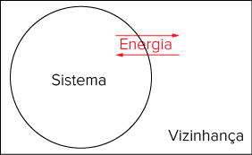
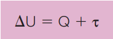
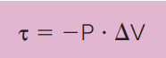
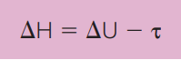
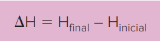
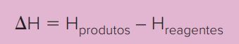

[...] A cal virgem para uso culinário, óxido de cálcio com alto grau de pureza, tem o poder de conferir aos doces de frutas uma fina camada de aspecto vítreo na superfície. São as famosas frutas cristalizadas que causam reações
de amor e ódio entre os comedores de panetone. “A reação química provocada por ela libera calor, que funciona como uma espécie de semicozimento”, explica a professora Glaucia Maria Pastore, da Unicamp. “Essa energia liberada
amolece as estruturas celulares da fruta, que não perde o aroma. O gosto fica peculiar.” A reação química já começa na mistura da cal à água. A cal se transforma em hidróxido de cálcio, um fenômeno altamente exotérmico, ou
seja, em que há grande desprendimento de calor. Essa solução deve ficar em repouso por 24 horas. Dela só se aproveita a água de cal, a solução límpida que fica por cima. É nessa água de cal que os pedaços de abóbora ou de mamão
vão passar mais 24 horas.
O hidróxido de cálcio que fica impregnado na abóbora reage como o gás carbônico do ar, formando carbonato de cálcio (substância presente no mármore) e liberando vapor de água. Depois de fria, aquela camada vítrea nada mais é que
o carbonato de cálcio cristalizado. [...]
LIMA, Claudia de Castro. "Por que gostamos tanto de comer doce?".
Superinteressante , 31 maio 2003. Abril Comunicações S.A.Disponível em: <https://super.abril.com.br/saude/a-importancia-dos-doces/>. Acesso em: 1o set. 2021.
Quais são as aplicações de fenômenos que liberam energia?
Da mesma maneira que existem os processos que liberam energia, também existem os processos que absorvem energia. De onde essa energia sai?
Como são denominados esses fenômenos?
Neste capítulo serão abordadas as habilidades
EM13CNT101
,
EM13CNT102
,
EM13CNT203
e
EM13CNT301
.
Termodinâmica
Neste capítulo, estudaremos a energia térmica e suas trocas com o ambiente. A Termodinâmica tem como objetivo estudar as transformações de energia e a viabilidade de tais transformações e, para isso, faz uso de duas leis fundamentais:
A primeira lei é o princípio da conservação de energia, ou seja, a energia não pode ser criada e também não pode ser destruída, apenas pode ser transformada.
A segunda lei trata da transferência de calor do corpo mais quente para o mais frio, espontaneamente.
Para iniciarmos nossos estudos em energia e como devemos considerá-la nas transformações químicas, precisamos definir alguns conceitos que serão úteis, como o sistema e a vizinhança.
Denomina-se sistema o conjunto que se estuda, enquanto a vizinhança é tudo que está ao redor do sistema. Por exemplo, se nosso objeto de estudo é o planeta Terra, podemos dizer que o Universo é a vizinhança.
Sistema e vizinhança podem trocar energia, em qualquer sentido.

O trabalho (t) pode ser definido como a medida da energia transferida pela aplicação de uma força ao longo do deslocamento, como empurrar um objeto ou variar o volume de uma porção gasosa.
Quando se realiza trabalho sobre um sistema, transfere-se energia para ele, e essa energia pode ser armazenada em forma de calor.
Mas o que é o calor? Já vimos anteriormente que o calor pode ser definido como a energia que passa de um objeto mais quente para outro mais frio. Por exemplo, sentimos o calor de uma lareira acesa quando nos aproximamos dela, pois
o calor produzido pelo sistema (a madeira queimando na lareira) é capaz de aumentar a temperatura da vizinhança. O funcionamento da lareira acontece por causa de uma reação química que libera calor: a combustão, que transforma
um combustível (que pode ser qualquer substância contendo energia acumulada) em substâncias de menor conteúdo energético, por meio de um comburente, que nesse caso é o gás oxigênio.
É possível imaginar que o sistema contenha certa quantidade de energia, assim como a vizinhança, visto que existem transferências de energia entre eles. Mas como quantificar essa grandeza?
A energia interna de um sistema de partículas considera todas as energias associadas a ele: as energias cinéticas de agitação, a energia potencial associada ao estado de agregação, a energia armazenada nas ligações e a energia acumulada nos núcleos atômicos.
O somatório de todas essas energias é a
energia interna do sistema , que é representada pela letra
U .
Devido à complexidade dessas energias, quantificar a entalpia de um sistema não é simples; então, na maioria dos casos não conseguimos determinar o seu valor. O que é feito então é quantificar a variação de energia interna do sistema,
ΔU , em decorrência dos processos ocorridos.
... as máquinas a vapor, símbolos do processo de industrialização e das mudanças sociais e trabalhistas trazidas pela primeira Revolução Industrial, forneceram energia para movimentar as indústrias da época, na
Inglaterra, mudando o modo de produção, de artesanal para formas mais complexas de manufatura. A Termodinâmica se desenvolveu durante esse período, como uma resposta aos problemas de eficiência de processos
envolvendo gases e vapores.
Nas aulas de História, você estudará a Revolução Industrial, suas causas e consequências, e o papel do carvão e outras fontes de energia nas indústrias da época.
Neste capítulo, as medidas de calor serão expressas em calorias e também em joules. Uma caloria é a quantidade de energia necessária para elevar a temperatura de 1 grama de água em 1 °C, e um joule é a quantidade de energia necessária para elevar a temperatura
de 0,24 g de água em 1 °C. Essa relação é o resultado da compreensão de que
o calor e o trabalho são grandezas equivalentes .
1 cal 5 4,18 J, logo, 1 kcal 5 4,18 kJ
No Sistema Internacional de unidades, define-se o joule como o trabalho envolvido no deslocamento de um objeto em 1 metro com uma força de 1 newton.
Sejam os fenômenos ocorridos no sistema químicos ou físicos, eles serão acompanhados de uma quantidade de calor perdido ou recebido pelo sistema (Q) e de um trabalho realizado pelo sistema ou sobre ele (t), e esses valores fornecerão
a variação da energia interna:

Essa é a primeira lei da Termodinâmica, de caráter universal, aplicável a sistemas de qualquer natureza. É uma interpretação do princípio da conservação da energia.
Quando ΔU assume valores positivos, significa que o sistema recebeu energia da vizinhança e o processo é dito
endotérmico . A vizinhança pode experimentar diminuição de temperatura.
Quando ΔU assume valores negativos, significa que o sistema forneceu energia para a vizinhança e o processo é dito
exotérmico . A vizinhança pode experimentar aumento de temperatura.
A reação de combustão que ocorre nos motores dos veículos é um exemplo de processo exotérmico, enquanto a fotossíntese, que ocorre nas plantas clorofiladas, é um exemplo de processo endotérmico.
... a energia pode ser definida como capacidade de realizar trabalho ou de transferir calor, enquanto a temperatura indica o grau de energia térmica de um corpo.
Sendo o calor uma forma de energia, a principal diferença entre o calor e a temperatura é que a temperatura não depende da massa do corpo, mas o calor depende. Historicamente, o calor é medido em calorias, uma unidade
de energia relacionada a qualquer fenômeno que envolve trocas de calor.
Quando não há diferença de temperatura entre os corpos, as trocas de energia ocorrem na forma de trabalho.
Mudanças de fases e energia
As mudanças de estado físico foram estudadas anteriormente; agora vamos analisá-las do ponto de vista da Termodinâmica, determinando os processos endotérmicos e exotérmicos.
Quando há mudança de estado físico do sólido para o líquido temos um processo endotérmico, pois é necessário que o sólido absorva energia para se transformar em líquido. Podemos pensar em outro processo endotérmico quando aquecemos
a água: estamos fornecendo energia para que ela se transforme em vapor. No entanto, quando queremos transformar a água em gelo, retirarmos calor do sistema. Neste caso, estamos diante de uma transformação exotérmica, ou seja,
a água elimina calor para se transformar em gelo.
As mudanças de estado físico ressublimação e liquefação também envolvem trocas de calor com a vizinhança, pois são processos exotérmicos. Já a sublimação é considerada uma transformação endotérmica.
Questão resolvida
1
Enem Libras 2017 Alguns fenômenos observados no cotidiano estão relacionados com as mudanças ocorridas no estado físico da matéria. Por exemplo, no sistema constituído por água em um recipiente de barro, a água mantém-se
fresca mesmo em dias quentes.
A explicação para o fenômeno descrito é que, nas proximidades da superfície do recipiente, a
condensação do líquido libera energia para o meio.
solidificação do líquido libera energia para o meio.
evaporação do líquido retira energia do sistema.
sublimação do sólido retira energia do sistema.
fusão do sólido retira energia do sistema.
Resolução:
Alternativa: C
A evaporação que ocorre na superfície do líquido retira calor da massa líquida, resfriando-a.
H2O(L) 1 calor ñ H2O(g)
O conceito de entalpia
É bastante comum que as reações químicas ocorram em ambientes controlados, onde a pressão P é constante. Quando gases estão envolvidos nessas reações, como produtos ou reagentes, o trabalho (t) é realizado pelo sistema ou sobre
ele, pois esses gases poderão se expandir ou se comprimir.
Quando o gás é gerado na reação, a tendência é ocorrer expansão contra a fronteira com a vizinhança, realizando, assim, trabalho mecânico. Numericamente, esse trabalho pode ser calculado como a pressão multiplicada pela variação
de volume do gás:

Lembrando que ΔV = Vfinal - Vinicial
A variação de entalpia de uma reação, representada por DH, é uma grandeza que revela a quantidade de calor absorvido ou liberado por uma reação química. Sua unidade é a mesma da energia ou do trabalho (calorias ou joules) e só
pode ser definida quando a reação acontece a pressão P constante e apenas um tipo de trabalho é realizado, o trabalho -P ∙ ΔV.
Para quantificar a variação de entalpia de um sistema que sofre uma transformação, precisamos entender que se trata de uma
função de estado , ou seja, é uma grandeza que depende apenas dos estados inicial e final do sistema. Essa variação, portanto, é definida como:

Lembrando que
ΔU é a variação da energia interna do sistema,
ΔU = Q + t,
t = -P ? ΔV,
e realizando as devidas substituições, temos:
ΔH = Q + t – t
Logo, ΔH = Q
Assim, definimos a variação de entalpia de um processo como a quantidade de calor envolvida no processo a pressão constante e podemos representá-la por:

No caso de uma transformação química, onde temos reagentes se transformando em produtos, vale a analogia de que os reagentes são o estado inicial do processo, enquanto os produtos são o estado final; então, a expressão ΔH = Hfinal – Hinicial pode ser reescrita como:

Convém ressaltar que não existe uma maneira de determinar experimentalmente a entalpia inicial, Hreagentes, e a entalpia final, Hprodutos. O que podemos determinar, utilizando calorímetros, é a variação de
entalpia, ΔH, da reação.
De maneira similar a ΔU, quando ΔH > 0 o processo é considerado endotérmico (absorve energia) e quando ΔH < 0 o processo é conside-rado exotérmico (libera energia).
O
sinal negativo indica que, na expansão, o trabalho está sendo feito pelo sistema sobre a vizinhança, e não pela vizinhança.
Mais
Reprodução
A história e a química do fogo , Aécio Pereira Chagas. 2. ed. Campinas: Átomo, 2013.
Leia esse livro e entenda melhor as relações entre o homem e o fogo. As reações exotérmicas sempre despertaram a curiosidade nas pessoas, não apenas por liberarem energia, mas porque em alguns casos essa liberação de energia é tão violenta que causa explosões.
Além disso, o fogo é causado por reações exotérmicas que não só liberam energia na forma de calor, mas também na forma de luz, e a humanidade tem feito uso do fogo desde que conseguiu controlá-lo.
Aplicando conhecimentos
1
Classifique os fenômenos a seguir em endotérmicos ou exotérmicos:
Combustão da gasolina no motor de um carro.
O vidro do banheiro que embaça quando tomamos um banho quente.
Fotossíntese das folhas de uma árvore.
Ferver a água para cozinhar.
2
Quais mudanças de estado físico são endotérmicas?
3
Quais mudanças de estado físico são exotérmicas?
4
A gasolina é um dos combustíveis mais utilizados em veículos, mas tem caráter poluidor, pois emite o gás CO2 durante a sua combustão. Estima-se que a combustão de 1 mol de n-octano (o principal componente da gasolina,
de fórmula C
8H18) libere 5 471 kJ. Quantos quilogramas de gás carbônico são emitidos na atmosfera ao se obterem 106 kJ de energia na queima de octano?
Dados: massa molar do CO2: 44 g/mol.
50 kg.
55 kg.
57 kg.
64 kg.
Consolidando saberes
1
Unicamp-SP 2018 Em 12 de maio de 2017, o Metrô de São Paulo trocou 240 metros de trilhos de uma de suas linhas, numa operação feita de madrugada, em apenas três horas. Na solda entre o trilho novo e o usado empregou-se
uma reação química denominada térmita, que permite a obtenção de uma temperatura local de cerca de 2 000 °C. A reação utilizada foi entre um óxido de ferro e o alumínio metálico.
De acordo com essas informações, uma possível equação termoquímica do processo utilizado seria
Fe2O3 1 + Aℓ ➝ 2 Fe + Aℓ2O3 ΔH 5 1852 kJ/mol
FeO3 + Aℓ ➝ Fe + AℓO3 ΔH 5 2852 kJ/mol
FeO3 + Aℓ ➝ Fe + AℓO3 ΔH 5 1852 kJ/mol
Fe2O3 + 2 Aℓ ➝ 2 Fe + Aℓ2O3 ΔH = 2852 kJ/mol
2
UFRGS 2017 Considere as seguintes afirmações sobre a termoquímica.
A vaporização do etanol é um processo exotérmico.
Os produtos de uma reação de combustão têm entalpia inferior aos reagentes.
A reação química da cal viva (óxido de cálcio) com a água é um processo em que ocorre absorção de calor.
Quais estão corretas?
Apenas I
Apenas II
Apenas III
Apenas I e II
I, II e III
3
Uem-PR 2018 Sabendo que a combustão completa de 1 mol de metano libera 802 kJ de energia; que a combustão completa de 1 mol de etanol libera 1 350 kJ de energia e que o gás oxigênio representa 20% do volume total do
ar, assinale o que for correto.
01.
O etanol é uma fonte de energia não poluente, pois, quando queimado com oxigênio, produz apenas água e calor.
02.
O metano pode ser obtido a partir da decomposição da matéria orgânica presente em restos de alimentos.
04.
A combustão incompleta do metano pode levar à produção de fuligem devido à formação de carbono.
08.
Estando os gases na CNPT, para a queima total de 45 L de metano são necessários aproximadamente 450 L de ar.
16.
O metano produz maior quantidade de energia por quantidade de massa do que o etanol.
Soma:
4
UEPG-PR 2016 Dadas as equações abaixo, que representam a combustão dos compostos metanol e etanol, e considerando iguais densidades dos dois líquidos, assinale o que for correto.
Dados: C = 12; O = 16; H = 1
ΔH 5 2726 kJ/mol
C2H6O + 3 O2 ➝ 2 CO2 1 3 H2O ΔH 5 21 368 kJ/mol
01.
Na combustão de volumes iguais dos dois compostos, o etanol libera maior quantidade de calor.
02.
Volumes iguais dos dois compostos apresentam massas iguais.
04.
Nas CNTP, a queima de 1 mol de etanol consome 22,4 L de O2.
08.
32 g de metanol liberam 726 kJ de calor.
Soma:
5
UPF-RS 2016 A transformação dos materiais está presente no setor produtivo e nos afazeres diários. Esses processos envolvem consumo e liberação de energia. A conversão da energia é uma das principais buscas da atual
sociedade tecnológica. Analise as seguintes afirmativas, relacionadas aos processos que envolvem consumo e liberação de energia.
A solidificação da água em gelo, em dias de inverno, nas temperaturas negativas, ocorre com liberação de energia.
A equação Fe2O3 + 3 C + energia ➝ 2 Fe + 3 CO2 representa a transformação do minério de ferro em ferro metálico, nas siderúrgicas, e é uma reação exotérmica.
A decomposição da sacarose é representada pela equação C12H22O11 + energia ➝ 12 C + + 11 H2O e necessita de absorção de energia para que a reação química ocorra.
A combustão do etanol nos carros é representada pela equação C2H5OH + energia + 3 O2 ➝ ➝ 2 CO2 + 3 H2O e absorve uma grande quantidade de calor, em um processo
endotérmico, que depois será utilizado para o movimento do carro.
Está correto apenas o que se afirma em:
I e II
II e III
I e IV
II, III e IV
I e III
6
Ueg-GO 2016 Os hidrocarbonetos são largamente utilizados como combustíveis devido ao seu alto poder calorífico. Dentre eles destacam-se o metano e o butano, os quais apresentam calores de combustão iguais a 208 e 689
kcal/mol, respectivamente.
A energia produzida, em kcal/mol, pela combustão completa de 1 000 g de uma mistura de metano e butano na proporção em massa de 2 partes do primeiro para 3 partes do segundo, será aproximadamente
11 900
13 000
12 300
19 300
1
Uema 2016 Leia a seguinte manchete recentemente veiculada em emissora de televisão nacional.
“Combustível é uma substância que em contato com outra provoca uma reação química, produzindo energia que é liberada na forma de calor.”
PETROBRAS. Peça publicitária veiculada na TV Globo.
Não é simples definir energia, mas é fácil perceber sua existência. Nesse contexto, pode-se inferir que energia é a
grandeza que se manifesta apenas na forma de luz.
grandeza que se manifesta apenas na forma de calor.
grandeza que avalia a capacidade de um sistema realizar trabalho.
matéria que tem massa e ocupa lugar em dado espaço do sistema.
forma do calor fluir espontaneamente entre corpos com mesma temperatura.
8
UFG-GO Na digestão, os alimentos são modificados quimicamente pelo organismo, transformando-se em moléculas que reagem no interior das células para que energia seja liberada.
A equação química, não balanceada, a seguir representa a oxidação completa de um mol da substância tributirina, também conhecida como butirina, presente em certos alimentos
C15H26O6 + O2 ➝ CO2 + H2O ΔH= -8 120 kJ /mol
Considerando-se que toda a energia da reação esteja disponível para a realização de trabalho mecânico, quantos mols de O2 são necessários para que uma pessoa levante uma caixa de 20,3 kg do chão até uma altura h = 2,0
m?
Dados: g = 10,0 m/s²
2,03 X 1024
4,06 X 1024
9,25 X 1024
18,50 X 1024
20,00 X 1024
9
Unicamp-SP 2018 Mesmo em manhãs bem quentes, é comum ver um cão tomando sol. O pelo do animal esquenta e sua língua do lado de fora sugere que ele está cansado. O pelo do animal está muito quente, mas mesmo assim o cão
permanece ao sol, garantindo a produção de vitamina D3. Durante essa exposição ao sol, ocorrem transferências de energia entre o cão e o ambiente, por processos indicados por números na figura abaixo.
(Adaptado de KHAN ACADEMY, Endotherms and ectotherms. Disponível em www.khanacademy.org. Acessado em 26/07/17.
Em ordem crescente, os números correspondem, respectivamente, aos processos de
convecção, evaporação, radiação, condução e radiação.
convecção, radiação, condução, radiação e evaporação.
condução, evaporação, convecção, radiação e radiação.
condução, radiação, convecção, evaporação e radiação.
 ΔH 5 2726 kJ/mol
ΔH 5 2726 kJ/mol